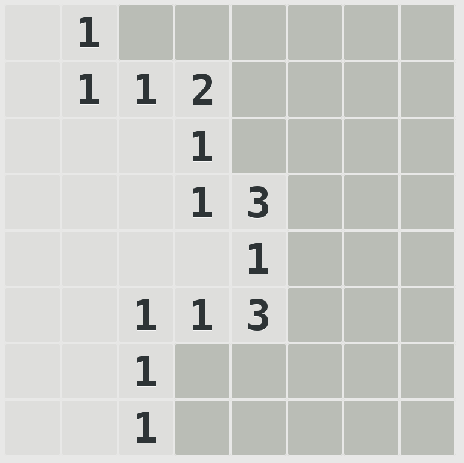
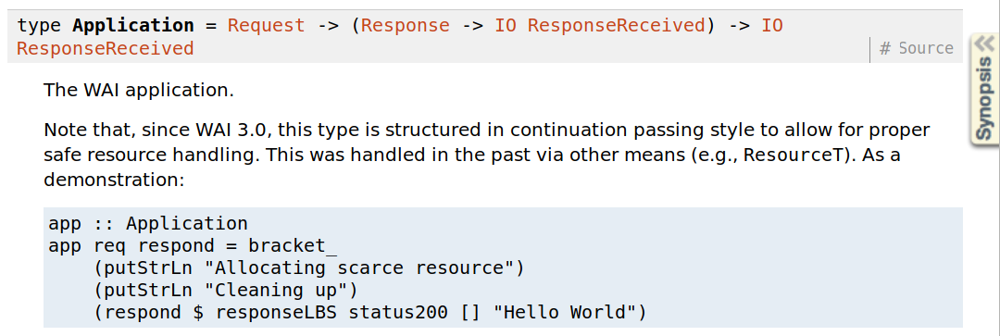
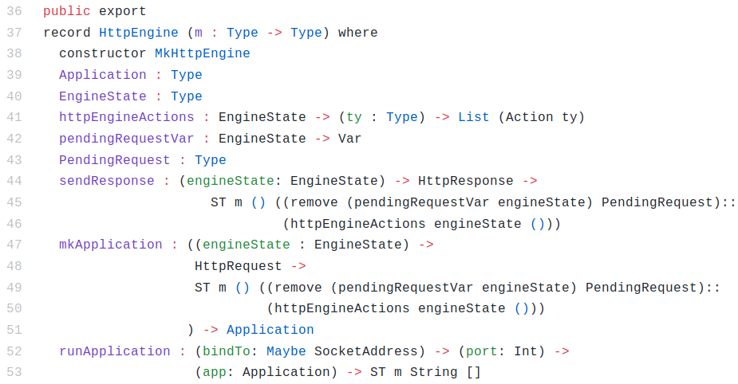
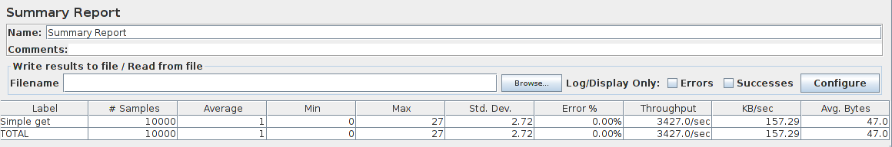

The Dependently Typed Revolution
Proving your programs are correct with dependent types
Andrew Miller - andrew.miller@rea-group.com
https://github.com/A1kmm
https://rea.to/careers
Properties and Propositions
natToString : Nat → String
Properties and Propositions
natToString : Nat → String
stringToNat : String → Maybe Nat
Properties and Propositions
natToString : Nat → String
stringToNat : String → Maybe Nat
forall a in Nat. stringToNat (natToString a) = Just a
Properties and Propositions
natToString : Nat → String
stringToNat : String → Maybe Nat
forall a in Nat. stringToNat (natToString a) = Just a
prop : Nat → Bool
prop a = stringToNat (natToString a) == Just a
Formal Verification and Certified Software
forall a in Nat, a > 0, b in Nat, b > 0,
c in Nat, c > 0, n in Nat, n > 2:
an + bn ≠ cn
Proposition stated 1637
Proved 1994
Curry-Howard Correspondence
Photograph of Haskell Curry
Image credit: Gleb Svechnikov. Licensed under Creative
Commons – By – Share Alike
Curry-Howard Correspondence
| Typed Lambda Calculus | Mathematical Logic | Example |
|---|---|---|
| Type | A proposition | x : Nat ↔ There exists at least one natural number |
| Value | A proof | x = 1 (I have proved that there exists a natural number by supplying an example, 1). |
Traditional Type Systems
Dependent Types in Idris
data Vec : Nat -> Type -> Type where
MkVec : (l : List a) -> Vec (length l) a
myVec : Vec 5 Nat
myVec = MkVec [1, 2, 3, 4, 5]
Minesweeper as an Example Problem
https://github.com/A1kmm/proofsweeper
Haskell Web Application Interface
http4idris HttpEngine
http4idris HttpEngine
Sharing knowledge with guilds

Questions?
Get in touch: andrew.miller@rea-group.com
ProofSweeper: https://github.com/A1kmm/proofsweeper
http4idris: https://github.com/A1kmm/http4idris
REA Tech blog: https://rea.to/techblog
Find out about working at REA: https://rea.to/careers